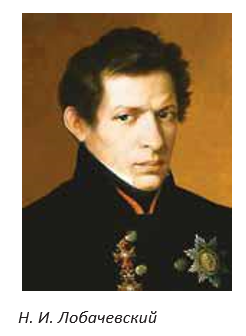
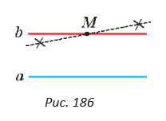
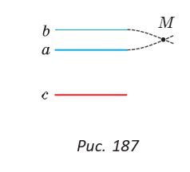

§ 16. Аксиома параллельных прямых
Вы уже знаете, что на плоскости через точку, не лежащую на данной прямой, можно провести прямую, параллельную данной (см. § 15). Из пятого постулата Евклида (постулат — аксиоматическое предположение) следует, что такая прямая — единственная.
|  |
На протяжении двух тысячелетий вокруг утверждения о единственности параллельной прямой разыгрывалась захватывающая и драматичная история! Со времен Древней Греции математики спорили о том, можно доказать пятый постулат Евклида или нет. То есть это теорема или аксиома? В конце концов работы русского математика Н. И. Лобачевского (1792—1856) позволили выяснить, что доказать пятый постулат нельзя. Поэтому это утверждение является аксиомой. Аксиома параллельных прямых. Через точку, не лежащую на данной прямой, можно провести только одну прямую, параллельную данной. |
|  |
Если прямая b проходит через точку M и параллельна прямой a (рис. 186), то любая другая прямая, проходящая через точку M, будет пересекаться с прямой a в некоторой точке, пусть и достаточно удаленной. |
Поиски доказательства пятого постулата Евклида привели к развитию математики и физики, к пересмотру научных представлений о геометрии Вселенной. Решая проблему пятого постулата, Лобачевский создал новую геометрию, с новыми аксиомами, теоремами, отличающуюся от геометрии Евклида, которая теперь так и называется— геометрия Лобачевского.
Вы уже знаете, что на плоскости две прямые, перпендикулярные третьей, параллельны между собой. А если две прямые параллельны третьей прямой, то что можно сказать про первые две прямые? На этот вопрос отвечает следующая теорема.
На плоскости две прямые, параллельные третьей, параллельны между собой.
|  |
Дано: a || c, b || c (рис. 187). Доказать: a || b. Доказательство. Предположим, что прямые a и b не параллельны. Тогда они пересекаются в некоторой точке M. Поэтому через точку M будут проходить две прямые a и b, параллельные третьей прямой c. А это противоречит аксиоме параллельных прямых. Значит, наше предположение неверно и a || b. Теорема доказана. |
Метод доказательства «от противного»
При доказательстве теоремы о двух прямых, параллельных третьей, мы применили метод доказательства от противного (то есть «от противоположного»). Суть его в следующем. Утверждение любой теоремы делится на условие — то, что в теореме дано, и заключение — то, что нужно доказать.
В доказанной выше теореме условие: «Каждая из двух прямых параллельна третьей прямой», а заключение: «Эти две прямые параллельны между собой».
Используя метод от противного, предполагают, что из данного условия теоремы следует утверждение, противоположное (противное) заключению теоремы. Если при сделанном предположении путем логических рассуждений приходят к какому-либо утверждению, противоречащему аксиомам или ранее доказанным теоремам, то сделанное предположение считается неверным, а верным — ему противоположное.
В доказательстве нашей теоремы мы предположили, что эти две прямые не параллельны, а пересекаются в точке. И пришли к выводу, что тогда нарушается аксиома параллельных прямых. Следовательно, наше предположение о пересечении прямых не верно, а верно ему противоположное: прямые не пересекаются, то есть параллельны.
Методом от противного ранее была доказана теорема о двух прямых, перпендикулярных третьей.
Данный метод является очень мощным логическим инструментом доказательства. Причем не только в геометрии, но и в любом аргументированном споре.
Используя аксиому параллельных прямых и метод от противного, докажите самостоятельно следующую теорему.
Если на плоскости прямая пересекает одну из двух параллельных прямых, то она пересекает и другую прямую.
|
|